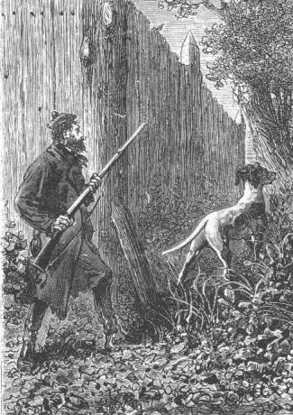
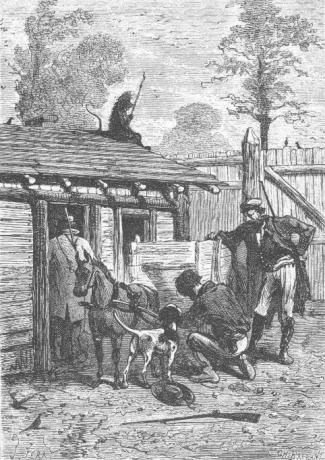

The convalescence of the young patient went along at a regular pace. The only thing to be desired was that his condition would allow them to take him to Granite House. However acceptable were the arrangements and provisions at the house at the corral, they could not find there the comfort of the solid granite dwelling. Besides, it did not offer the same security and its hosts, in spite of their surveillance, were always under the menace of gunfire from the convicts. At Granite House on the contrary, in this impregnable and inaccessible mass, they would have nothing to fear and any attempt against them would definitely miscarry. They therefore waited impatiently for the time when Herbert could be taken there without danger to his wounds. They had decided to make this move even though communications across Jacamar Woods were very difficult.
They were without news from Neb but without anxiety about him. The courageous negro, well entrenched within the depths of Granite House, would not allow himself to be surprised. Top had not been sent back to him and it seemed useless to expose the faithful dog to some gunshot which would deprive the colonists of their most useful auxiliary.
They therefore waited but the colonists were in a hurry to be reunited at Granite House. It troubled the engineer to see his forces divided because it would make it easy for the pirates. Since Ayrton’s disappearance it was only four against five because they still could not count on Herbert and this was not the least of the poor child’s worries. He well understood the difficulty of which he was the cause.
The question of knowing, under actual conditions, how they should deal with the convicts was treated in depth on the 29th of November by Cyrus Smith, Gideon Spilett and Pencroff at a time when Herbert was in a stupor and could not hear them.
“My friends,” said the reporter, after they had discussed the question of Neb and the impossibility of communicating with him, “I believe as you do that to chance ourselves on the corral road would be to risk receiving a gunshot without being able to return fire. But don’t you think it would be best now to search anew for these scoundrels?”
“That is what I think,” replied Pencroff. “We are not, I suppose, afraid of a bullet and as far as I am concerned, if Mister Cyrus approves, I am ready to dash into the forest. The devil! One man is equal to another!”
“But is he equal to five?” asked the engineer.
“I would join Pencroff,” replied the reporter, “and the two of us, well armed and accompanied by Top...”
“My dear Spilett, and you Pencroff,” replied Cyrus Smith, “stop and think. If the convicts were hidden at some spot on the island, if this spot was known to us and if it were only a matter of dislodging them, I would understand a direct attack. But shouldn’t we fear, on the contrary, that they would assuredly fire the first round?”
“Well, Mister Cyrus,” cried Pencroff, “a bullet does not always reach its destination.”
“The one which struck Herbert did not go astray, Pencroff,” said the engineer. “Besides, bear in mind that if both of you leave the corral, I would remain here alone to defend it. Tell me that when the convicts saw you leave, that they would not let you get into the forest and that they would not attack during your absence knowing that no one was here except a wounded child and one man.”
“You are right, Mister Cyrus,” replied Pencroff, with a muted rage that inflated his chest, “you are right. They would do anything to recapture the corral knowing that it is well stocked. And by yourself you would not be able to hold out against them. Ah! if we were only at Granite House!”
“If we were at Granite House,” replied the engineer, “the situation would be very different. There I would not be afraid to leave Herbert with one of us and the other three would go to search the forests of the island. But we are at the corral and it is best to remain here until such time as we can leave it together.”
There was no reply to be made to Cyrus Smith’s logic and his companions understood it well.
“If only Ayrton was still with us,” said Gideon Spilett. “Poor man! His return to social life was only of short duration!”
“That is if he is dead?...” added Pencroff in a rather strange tone.
“Do you think then, Pencroff, that these scoundrels spared him?” asked Gideon Spilett.
“Yes, if it were in their interest to do so!”
“What! do you suppose that Ayrton, on finding his former accomplices, would forget everything that he owes us...”
“Who knows?” replied the sailor, who did not hazard this unfortunate supposition without hesitation.
“Pencroff,” said Cyrus Smith, taking the sailor by the arms, “you have an evil thought there and you will cause me much distress if you persist in speaking in this way. I guarantee Ayrton’s loyalty!”
“I also,” added the reporter vividly.
“Yes... yes!... Mister Cyrus... I am wrong,” replied Pencroff. “In fact, that is an evil thought that I had there and nothing justifies it! But what do you want? I am no longer in control of myself. This imprisonment at the corral weighs terribly on me and I have never been as overexcited as I am now.”
“Be patient, Pencroff,” replied the engineer. “How much time, my dear Spilett, do you think it will be until Herbert can be transported to Granite House?”
“That is difficult to say, Cyrus,” replied the reporter, “because one imprudent move could bring on fatal consequences. However, if his convalescence is routine and if in eight days from now his strength returns to him, well, we will see.”
Eight days! That would put off the return to Granite House until the first days of December.
At this time of the year, spring was already two months old. The weather was fine and the heat began to be felt. The forests of the island were in full foliage and the time was coming when the usual harvesting would have to be made. The return to Grand View Plateau would then be followed by hard agricultural work which would only be interrupted by the planned exploration of the island.
We can therefore appreciate that the imprisonment at the corral was not beneficial to the colonists. But if they were obliged to bow to necessity, they did not do so without impatience.
Once or twice the reporter took a chance and went around the palisaded enclosure. Top accompanied him and Gideon Spilett, his carbine loaded, was ready for any eventuality.

Gideon Spilette was ready for any eventuality.
There were no ill encounters and nothing suspicious was found. The dog would have alerted him to any danger and since Top did not bark, he could conclude that there was nothing to fear for the moment at least and that the convicts were occupied on another part of the island.
However on his second sortie on the 27th of November, Gideon Spilett, who had ventured a quarter of a mile into the woods to the south of the mountain, noticed that Top sensed something. The dog’s pace was no longer at random; he went to and fro rummaging through the grass and undergrowth as if his sense of smell had been aroused by some suspicious object.
Gideon Spilett followed Top, encouraged him, excited him with his voice, all the while on the alert, carbine to his shoulder and profiting from the shelter of the trees to cover himself. It was not likely that Top sensed the presence of a man because in that case he would have announced it with short barks and with a sort of muted anger. Since he heard no such growling, then the danger was neither near nor soon.
About five minutes passed in this way with Top rummaging and the reporter prudently following him when suddenly the dog dashed toward a thick bush and drew out a stuffed rag.
It was a piece of torn and stained clothing which Gideon Spilett took to the corral at once.
There the colonists examined it and they recognized it as a piece of Ayrton’s jacket, a piece of that felt made only at the Granite House workshop.
“You see from this, Pencroff,” noted Cyrus Smith, “that there was resistance on the part of the unfortunate Ayrton. The convicts dragged him out in spite of himself. Do you still doubt his loyalty?”
“No, Mister Cyrus,” replied the sailor, “and it has been a long time since I have entertained even a momentary suspicion! But it seems to me that there is one conclusion that can be drawn from this fact.”
“Which is?” asked the reporter.
“It is that Ayrton was not killed at the corral. It is that they dragged him away still living since he has resisted. Now then, perhaps he is still alive.”
“Perhaps,” replied the engineer, who remained pensive.
That was a thought which could give Ayrton’s companions some hope. In fact, they had been led to believe that, surprised at the corral, Ayrton had fallen under some bullet, as had Herbert. But if the convicts had not first killed him, if they had taken him away living to some other part of the island, could it not be admitted that he was still their prisoner? Perhaps one of them had found again in Ayrton a former companion from Australia, Ben Joyce, the chief of the escaped convicts. And who knows if they did not conceive the impossible hope of getting Ayrton to join them. He would even have been very useful to them if they could make a traitor of him!...
This incident was thus favorably interpreted at the corral and it no longer seemed impossible that they would find Ayrton again. On his side, if he was a prisoner, Ayrton would doubtless do everything to escape from the hands of these bandits and this would be a powerful auxiliary for the colonists.
“In any case,” Gideon Spilett noted, “if by any good fortune Ayrton succeeds in saving himself, it will be to Granite House that he will immediately go because he will not know of the attempted assassination whose victim was Herbert, and consequently he will not know that we are imprisoned at the corral.”
“Ah! I wish that he was there, at Granite House, and that we were also there. Because eventually, if the rascals could do nothing against our dwelling, wouldn’t they be able at least to pillage the plateau, our plantations, our poultry yard!”
Pencroff had become a real farmer, endeared at heart to his harvests. But it must be said that Herbert was more impatient than anyone else to return to Granite House because he knew how necessary the colonists’ presence there was. And it was he who kept them at the corral. Only one idea was on his mind: to leave the corral, to leave it himself! He felt that he was strong enough for the trip to Granite House. He was sure that his strength would return faster in his room with the fresh air and the view of the sea.
Several times he pressed Gideon Spilett but the latter fearing, with reason, that Herbert’s badly cicatrized wounds would reopen during the trip, did not give the order to leave.
However, an incident occurred which forced Cyrus Smith and his two friends to yield to the lad’s wishes and God knows that this decision could cause pain and remorse.
It was the 29th of November, seven o’clock in the morning. The three colonists were chatting in Herbert’s room when they heard Top uttering vivid barks.
Cyrus Smith, Pencroff and Gideon Spilett seized their guns which were always ready to fire and left the house.
Top ran to the foot of the palisaded enclosure, jumped about and barked but it was with contentment not anger.
“Someone is coming.”
“Yes!”
“It is not an enemy.”
“Neb perhaps?”
“Or Ayrton?”
Hardly had these words been exchanged between the engineer and his two companions when a body bounded over the palisade and fell on to the ground in the corral.
It was Jup, Master Jup in person to whom Top gave a hearty welcome.
“Jup!” shouted Pencroff.
“It is Neb who sent him!” said the reporter.
“Then,” replied the engineer, “he must have some note on him.”
Pencroff rushed toward the orang. Evidently if Neb had wanted to send some important information to his master he could not have used a more reliable and rapid messenger who could pass where neither the colonists nor Top himself could.
Cyrus Smith was not mistaken. A sack hung from Jup’s neck and in this sack they found a note traced out in Neb’s hand.
Judge their despair when Cyrus Smith and his companions read these words:
“Friday, 6 o’clock in the morning. “Plateau invaded by the convicts!“Neb.”
They looked at each other without saying a word, then they went back to the house. What should they do? The convicts on Grand View Plateau, it was disaster, devastation, ruin!
Herbert, on seeing the engineer, the reporter and Pencroff re-enter, knew that the situation had become aggravated and when he saw Jup he no longer doubted that some danger threatened Granite House.
“Mister Cyrus,” he said, “I want to leave. I can endure the trip. I want to leave.”
Gideon Spilett approached Herbert. Then after he looked at him he said, “Let us leave then.”
The question was quickly decided as to whether Herbert would be carried on a stretcher or in the cart which had been brought to the corral by Ayrton. The stretcher would have a gentler motion for the patient but it would necessitate two bearers, that is to say two fewer guns for defense if there should be an attack on the way.
Would all hands be available, on the contrary, if they used the cart? Was it possible to put a mattress there on which Herbert would rest and to advance carefully so as to avoid any shock? They could do that.
The cart was brought out. Pencroff harnessed the onager to it. Cyrus Smith and the reporter picked up Herbert’s mattress and put it on the bottom of the cart between the two rails.

The cart was brought out. Pencroff harnessed the onager to it.
The weather was fine. The vivid rays of the sun shown through the trees.
“Are the weapons ready?” asked Cyrus Smith.
They were. The engineer and Pencroff, each armed with a double barreled gun, and Gideon Spilett, holding his carbine, had only to leave.
“Are you well, Herbert?” asked the engineer.
“Ah, Mister Cyrus,” replied the lad, “be calm. I will not die enroute!”
In speaking thus they saw that with a supreme will the poor child was mustering all his strength which was about to give way.
The engineer felt a pain in his heart. He still hesitated to give the signal for departure. But that would drive Herbert to despair, to kill him perhaps.
“Let’s go!” said Cyrus Smith.
The door of the corral was opened. Jup and Top, who knew that they must be silent, rushed on ahead. The cart left, the door was closed again and the onager, directed by Pencroff, advanced slowly.
Certainly it would have been better to take a route other than the one which went directly from the corral to Granite House but it would prove to be very difficult for the cart to move through the woods. Thus it was best to follow the regular path even though it was well known to the convicts.
Cyrus Smith and Gideon Spilett walked on either side of the cart ready to respond to any attack. It was not likely however, that the convicts had yet abandoned Grand View Plateau. Neb’s note had evidently been written and sent as soon as the convicts had shown themselves. Now this note had been dated six o’clock in the morning and the agile orang, accustomed to go to the corral frequently, could hardly have taken more than three quarters of an hour to cross the five miles which separated it from Granite House. The road was therefore safe at the moment and if there was any gunfire it would really occur closer to Granite House.
However, the colonists remained strictly on guard. Top and Jup, the latter armed with his cudgel, sometimes in front, sometimes thrashing about the woods at the edge of the road, did not signal any danger.
The cart advanced slowly under Pencroff’s direction. They had left the corral at seven thirty. One hour later, four of the five miles had been covered without incident.
The road was deserted over all of this part of Jacamar Woods which extended from the Mercy to the lake. No alert took place. The brushwood seemed to be as deserted as on the day when the colonists first set foot on the island.
They approached the plateau. One more mile and they would see the bridge over Glycerin Creek. Cyrus Smith did not doubt that this bridge would be in place because either the convicts had entered the plateau at this spot or, after having crossed one of the watercourses which surrounded the enclosure, they would have taken the precaution of lowering the bridge in order to beat a retreat.
Finally an opening in the last trees allowed them to see the sea’s horizon. But the cart continued its journey since none of the defenders would think of abandoning it.
At this moment Pencroff halted the onager and shouted in a terrible voice.
“Ah, the scoundrels.”
And his hand pointed to a thick smoke which was twirling above the mill, the stables and the poultry yard.
A man was dashing about amidst the smoke.
It was Neb.
His companions shouted. He heard them and ran toward them...
The convicts had abandoned the plateau about a half-hour earlier after having devastated it.
“And Mister Herbert?” shouted Neb.
Gideon Spilett returned for a moment to the cart.
Herbert had lost consciousness.